本实验建议在 us-east-1 区域进行。
在 Python 中，全局解释器锁（GIL）使得多线程无法并行执行。与 C 和 Java 等语言不同，Python 的多线程很难高效将多个线程映射到多个 CPU 上执行。虽然 Python 提供了 multiprocessing 等多进程的支持，但这在代码实现上较为繁琐，而且在效率和可扩展性上无法与使用容器技术相比。
运行基于 Python 的高性能计算任务的推荐方式是将任务拆分成并行任务。容器提供标准化的运行环境，并且具有高资源利用率与隔离性的优点，并且不需要对现有代码进行大量改造。
例如，在量化研究中经常遇到需要对超参进行优化的问题，不同的超参可能会对策略的表现有决定性的影响。对超参优化简单粗暴的处理方式就是进行网格搜索（grid search），这尤其适用于一些超参组合不多的场景。在下面的示例中，我们将展示如何通过容器技术，在 AWS ECS 服务中大量进行并行的网格搜索。
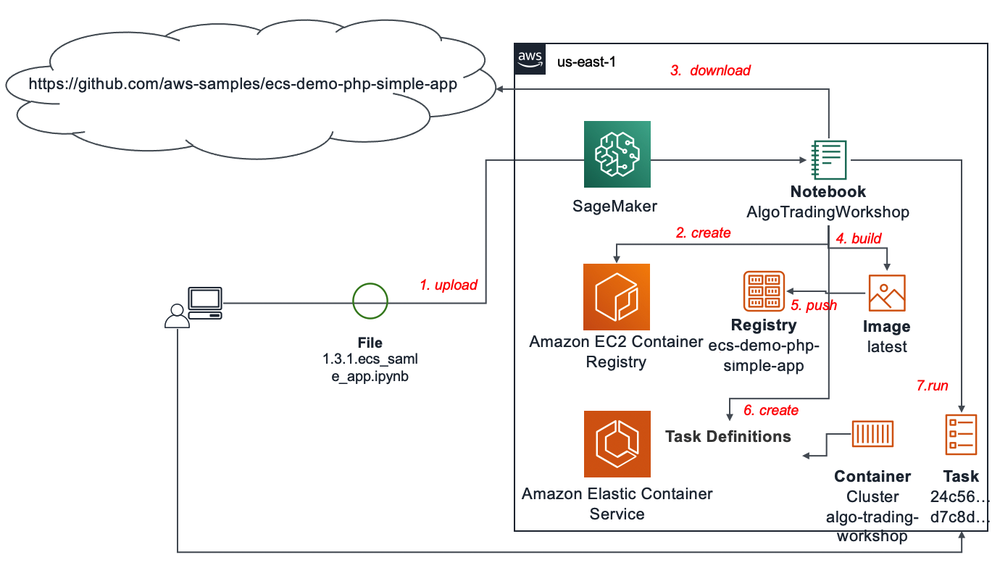
在这个环节，我们会先在 ECS 上搭建一个示例应用。如果您之前对 Docker 并不是很熟悉，这个环节可以帮助您快速掌握容器技术的一些基础知识。
下载此环节使用的 Notebook 代码到本地：1.3.1.ecs_sample_app.ipynb
回到 JupyterLab 界面，点击左上角的上传按钮：
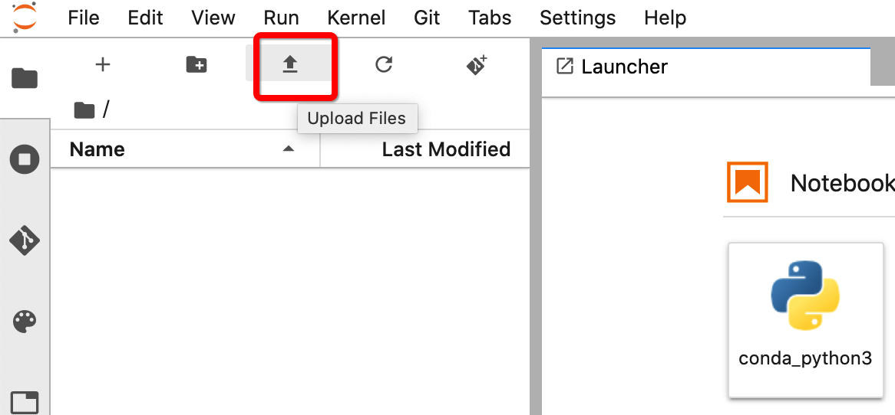
选择刚刚下载的 1.3.1.ecs_samle_app.ipynb 文件并上传。上传成功后打开 Notebook：
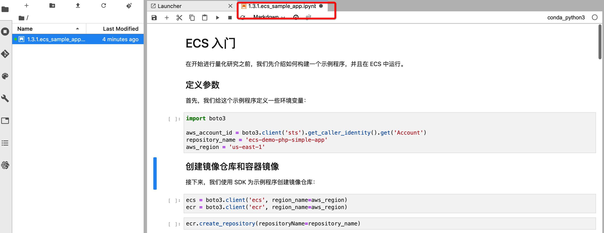
接下来逐个 cell 执行 Notebook 代码就可以了。您可能注意到代码中主要使用 Boto3（AWS Python SDK）进行了如下操作：
aws_account_id = boto3.client('sts').get_caller_identity().get('Account')
repository_name = 'ecs-gridsearch'
aws_region = 'us-east-1'
my_name = 'xxx'
bucket = 'algo-trading-workshop-{}'.format(my_name)
ecr.create_repository(repositoryName=repository_name)
创建完成之后，可以导航到 ECR 控制台：https://us-east-1.console.aws.amazon.com/ecr/repositories?region=us-east-1
这里可以看到新创建的镜像仓库：
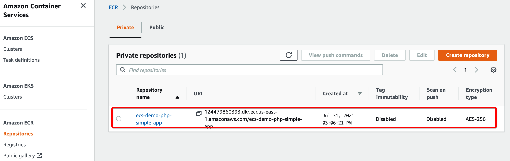
接下来构建 Docker 镜像并将其推送到镜像仓库：
!docker build ecs-demo-php-simple-app -t ecs-demo-php-simple-app
!docker tag ecs-demo-php-simple-app {aws_account_id}.dkr.ecr.{aws_region}.amazonaws.com/{repository_name}
!aws ecr get-login-password | docker login --username AWS --password-stdin {aws_account_id}.dkr.ecr.{aws_region}.amazonaws.com
!docker push {aws_account_id}.dkr.ecr.{aws_region}.amazonaws.com/{repository_name}
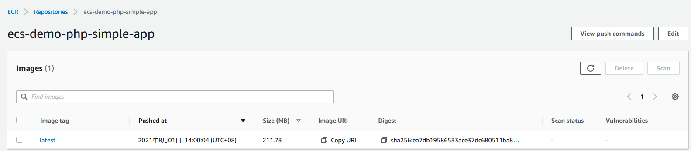
ecs.register_task_definition(
family="sample-app",
volumes=[
{
"name": "my-vol",
"host": {}
}
],
networkMode="awsvpc",
executionRoleArn="arn:aws:iam::{}:role/ecsTaskExecutionRole".format(aws_account_id),
containerDefinitions=[
{
"name": "simple-app",
"image": "{}.dkr.ecr.{}.amazonaws.com/{}:latest".format(aws_account_id, aws_region, repository_name),
"portMappings": [
{
"containerPort": 80,
"hostPort": 80,
"protocol": "tcp"
}
],
"mountPoints": [
{
"sourceVolume": "my-vol",
"containerPath": "/var/www/my-vol"
}
],
"entryPoint": [
"/usr/sbin/apache2",
"-D",
"FOREGROUND"
],
"essential": True
},
{
"name": "busybox",
"image": "busybox",
"cpu": 10,
"memory": 500,
"volumesFrom": [
{
"sourceContainer": "simple-app"
}
],
"entryPoint": [
"sh",
"-c"
],
"command": [
"/bin/sh -c \"while true; do /bin/date > /var/www/my-vol/date; sleep 1; done\""
],
"essential": False
}
],
requiresCompatibilities=["FARGATE"],
memory="512",
cpu="256"
)
完成之后，可以导航到 ECS 控制台的 Task Definitions 界面：https://us-east-1.console.aws.amazon.com/ecs/home?region=us-east-1#/taskDefinitions
可以看到刚刚创建的任务定义：
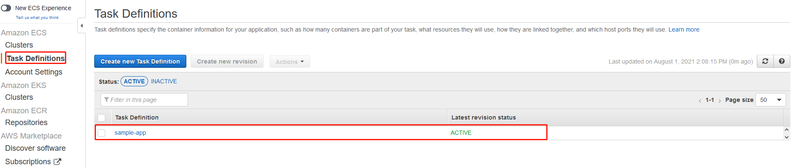
创建好的任务定义有一个 Amazon 资源名称（ARN），请复制 ‘taskDefinitionArn’ 的值到下一个 cell 中：
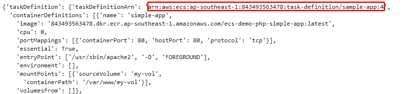
首先，导航到 CloudFormation 控制台：https://us-east-1.console.aws.amazon.com/cloudformation/home?region=us-east-1#/stacks?filteringStatus=active&filteringText=&viewNested=true&hideStacks=false
在 AlgoTradingWorkshop 堆栈的 Output 页面下，寻找三个公有子网的 id 和 HTTPSecurityGroup 的 id 复制到下一个 cell中：
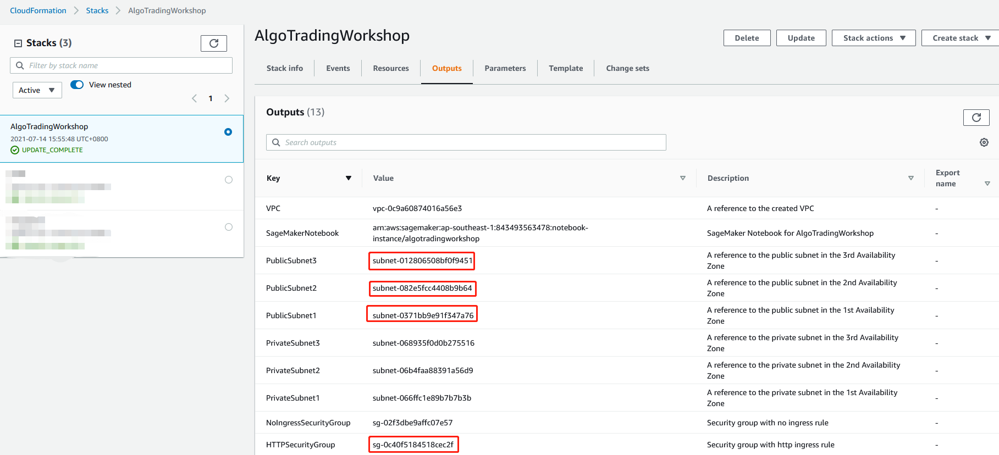
完成上述步骤之后，继续执行 Notebook 中的代码，就可以在 Fargate 中创建容器来运行示例程序了
执行完之后，导航到 ECS 控制台的集群界面：https://us-east-1.console.aws.amazon.com/ecs/home?region=us-east-1#/clusters
点击 AlgoTradingWorkshop 集群：
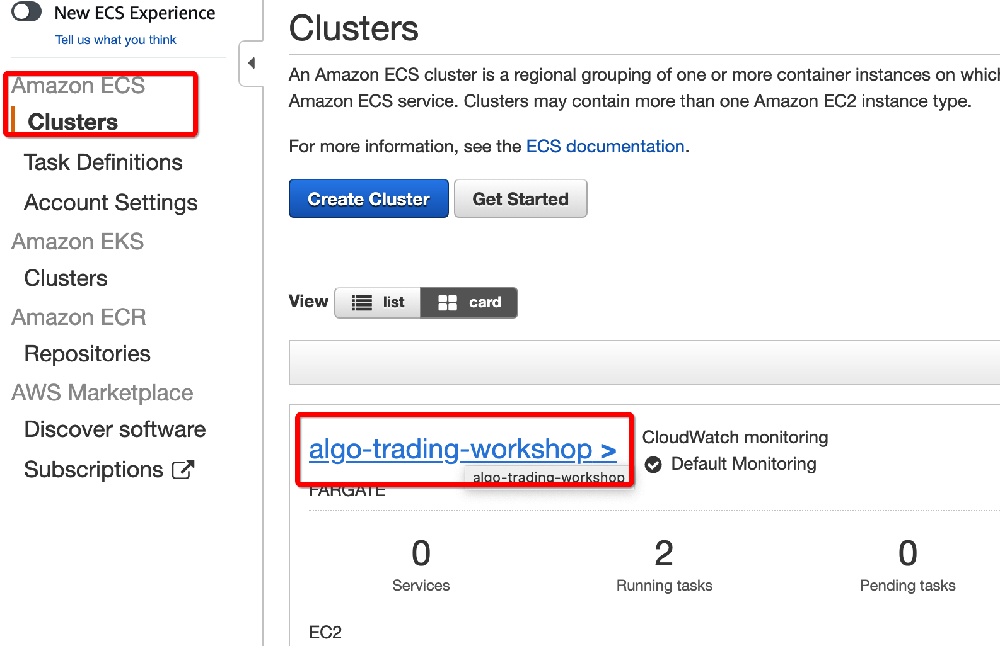
再点击 Task：
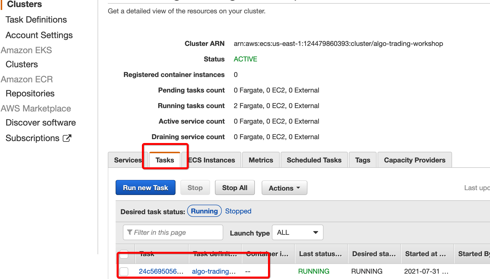
在task的详情界面中，找到 Public IP，此地址为示例应用的公网服务地址
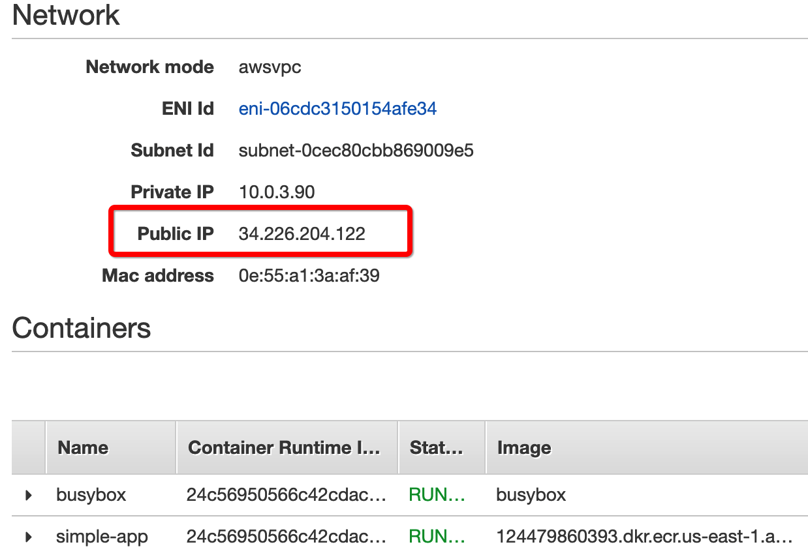
在浏览器中输入此地址，就可以访问示例应用了
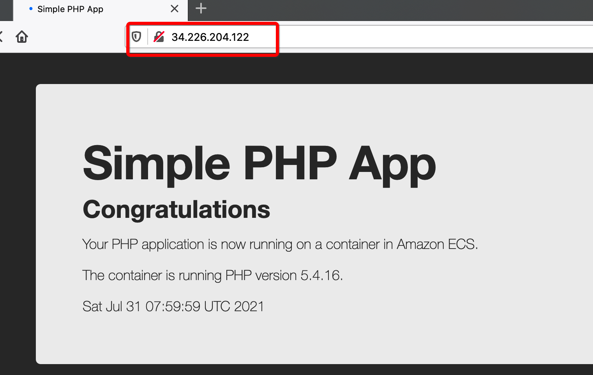
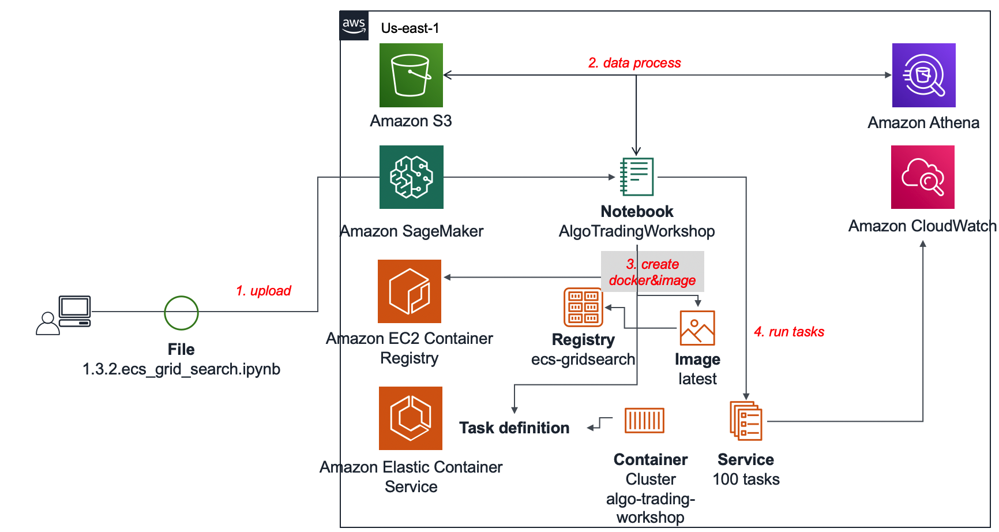
在刚才的环节，您应该已经熟悉了 ECS 中的一些基本概念和部署服务的步骤。在这个环节中，我们将真正开始批量在 ECS 中运行网格搜索。
下载此环节使用的 Notebook 代码到本地：1.3.2.ecs_grid_search.ipynb
回到 JupyterLab 界面，点击左上角的上传按钮：
选择刚刚下载的 1.3.2.ecs_grid_search.ipynb 文件并上传。上传成功后打开 Notebook：
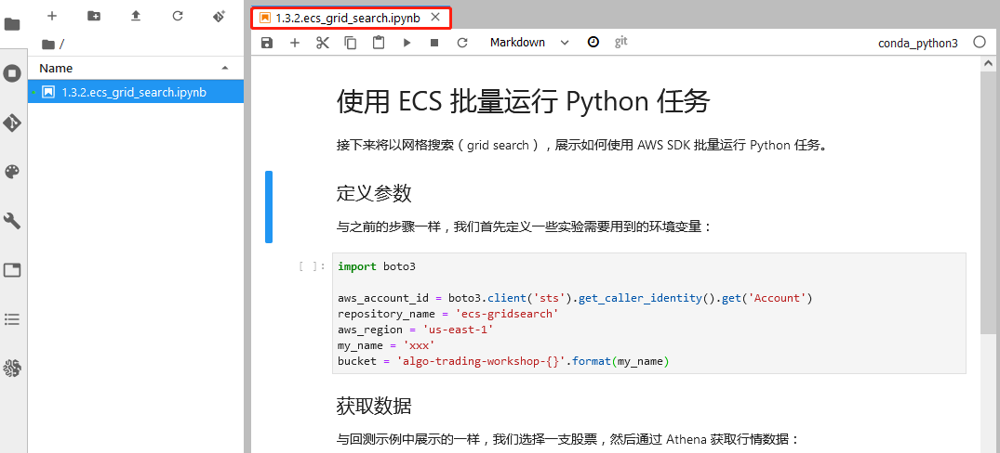
接下来逐个 cell 执行 Notebook 代码就可以了。您可能注意到代码中主要使用 Boto3（AWS Python SDK）进行了如下操作：
import boto3
aws_account_id = boto3.client('sts').get_caller_identity().get('Account')
repository_name = 'ecs-gridsearch'
aws_region = 'us-east-1'
my_name = 'xxx'
bucket = 'algo-trading-workshop-{}'.format(my_name)
import awswrangler as wr
s3_output = wr.athena.create_athena_bucket()
def execute_query(database, sql):
query_execution_id = wr.athena.start_query_execution(database=database, sql=sql)
response = wr.athena.get_query_execution(query_execution_id=query_execution_id)
wr.athena.wait_query(query_execution_id=query_execution_id)
OutputLocation = response['ResultConfiguration']['OutputLocation']
return OutputLocation
database = 'stock-data'
table = 'stock_day'
fields = '*'
ticker = '600519'
orderby = 'tradedate'
sort = 'ASC'
sql = f'''
SELECT {fields}
FROM "{database}"."{table}"
WHERE ticker='{ticker}'
AND tradedate>='2019-01-01'
ORDER BY {orderby}
{sort}
'''
output_location = execute_query(database, sql)
这里使用的数据是从 1.1 快速创建金融数据湖 中创建的简单数据湖中抽取的。
历史日线数据经过重命名、前复权等操作后再写入到 S3 中的指定路径。数据内容大致如下：
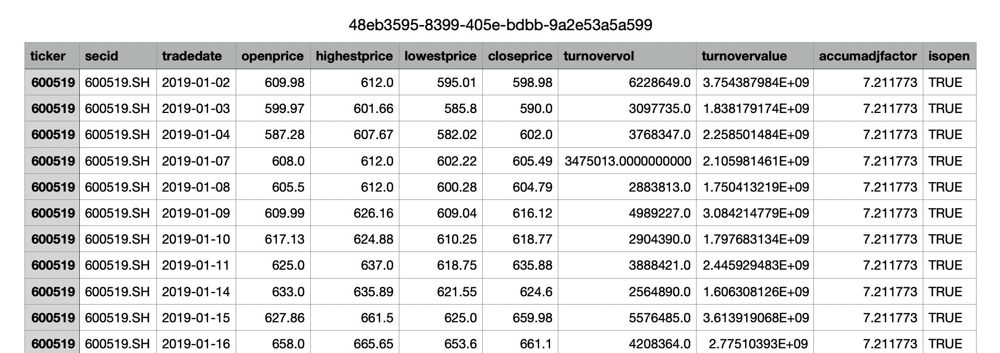
完成之后可以看到写入 S3 的数据文件：
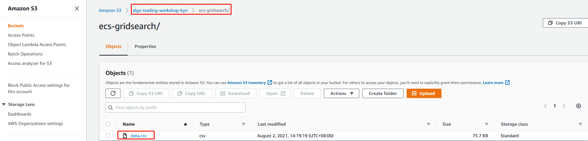
import json
counter = 0
for i in range(5, 10):
for j in range(10, 30):
counter += 1
params = {
'fastmaperiod': i,
'slowmaperiod': j
}
s3.put_object(Body=json.dumps(params), Bucket=bucket, Key='{}/trial_{}/input/params.json'.format(repository_name, str(counter)))
num_trials = counter
ecr.create_repository(repositoryName=repository_name)
创建完成之后，可以导航到 ECR 控制台：https://us-east-1.console.aws.amazon.com/ecr/repositories?region=us-east-1
这里可以看到新创建的镜像仓库：
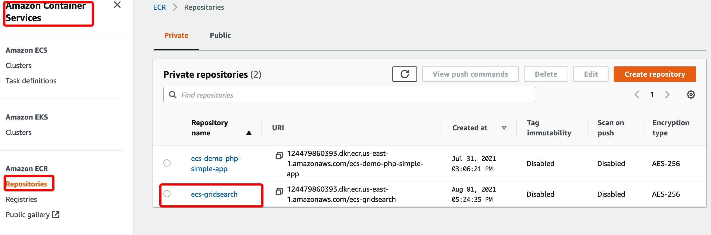
在这个实验里，我们自定义了一个 Dockerfile。这个 Dockerfile 定义了容器的基础环节和启动命令：
%%writefile {repository_name}/Dockerfile
FROM python:3.8
RUN pip --no-cache-dir install \
backtrader\
boto3 \
pandas
RUN curl "https://awscli.amazonaws.com/awscli-exe-linux-x86_64.zip" -o "awscliv2.zip" && unzip awscliv2.zip && ./aws/install && rm awscliv2.zip && rm -rf aws/
ENV ENVIRONMENT="/home/environment"
RUN mkdir -p $ENVIRONMENT/input
RUN mkdir -p $ENVIRONMENT/output
COPY backtest.py $ENVIRONMENT/
CMD aws s3 cp s3://$BUCKET/$PREFIX/trial_$TRIAL/input/ $ENVIRONMENT/input/ --recursive && \
aws s3 cp s3://$BUCKET/$PREFIX/data.csv $ENVIRONMENT/data.csv && \
python $ENVIRONMENT/backtest.py && \
aws s3 cp $ENVIRONMENT/output/ s3://$BUCKET/$PREFIX/trial_$TRIAL/output/ --recursive
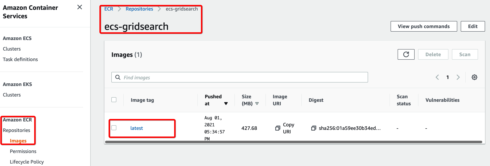
ecs.register_task_definition(
family=repository_name,
networkMode="awsvpc",
executionRoleArn="arn:aws:iam::{}:role/ecsTaskExecutionRole".format(aws_account_id),
containerDefinitions=[
{
"name": repository_name,
"image": "{}.dkr.ecr.{}.amazonaws.com/{}".format(aws_account_id, aws_region, repository_name),
"essential": True,
"logConfiguration": {
"logDriver": "awslogs",
"options": {
"awslogs-group": repository_name,
"awslogs-region": aws_region,
"awslogs-stream-prefix": repository_name
}
},
},
],
requiresCompatibilities=["FARGATE"],
memory="2048",
cpu="1024"
)
完成之后，可以导航到 ECS 控制台的 Task Definitions 界面：https://us-east-1.console.aws.amazon.com/ecs/home?region=us-east-1#/taskDefinitions
可以看到刚刚创建的任务定义：
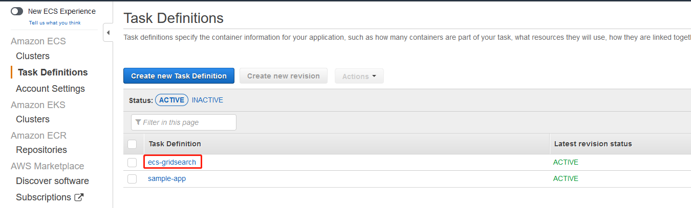
创建好的任务定义有一个 Amazon 资源名称（ARN），请复制 ‘taskDefinitionArn’ 的值到下一个 cell 中：
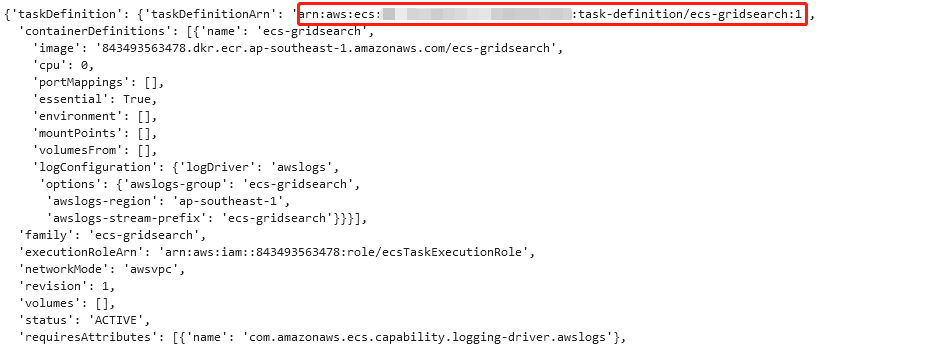
首先，导航到 CloudFormation 控制台：https://us-east-1.console.aws.amazon.com/cloudformation/home?region=us-east-1#/stacks?filteringStatus=active&filteringText=&viewNested=true&hideStacks=false
在 AlgoTradingWorkshop 堆栈的 Output 页面下，寻找三个私有子网的 id 和 NoIngressSecurityGroup 的 id 复制到下一个 cell中：
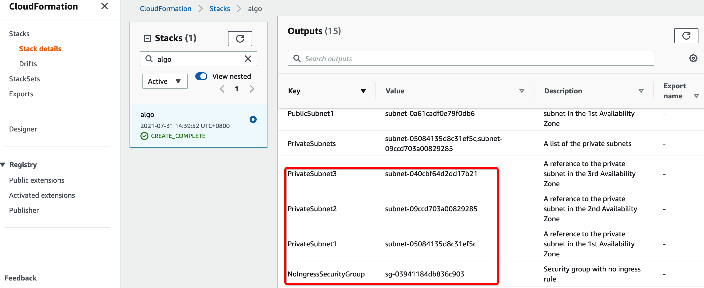
完成上述步骤之后，继续执行 Notebook 中的代码，最后就可以在 Fargate 中批量创建任务了
执行完之后，导航到 ECS 控制台的集群界面：https://us-east-1.console.aws.amazon.com/ecs/home?region=us-east-1#/clusters
点击 AlgoTradingWorkshop 集群：
再点击 Task，在task中可以查看到相关任务，在执行完并行计算后，任务会自动退出：
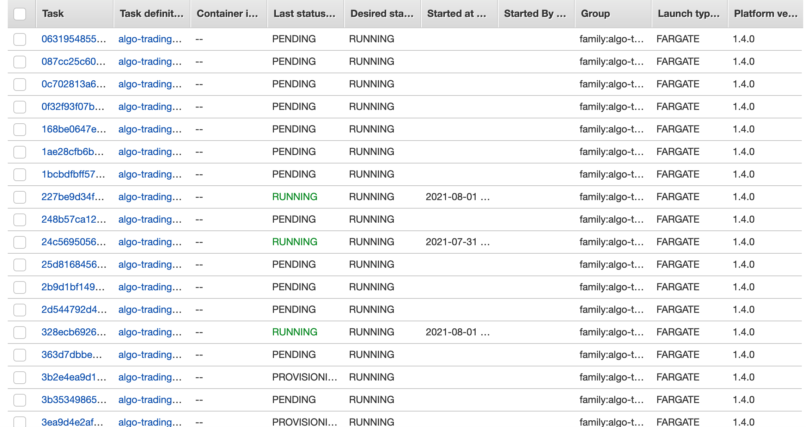
在 CloudWatch 中也可以查看容器任务运行的日志记录：
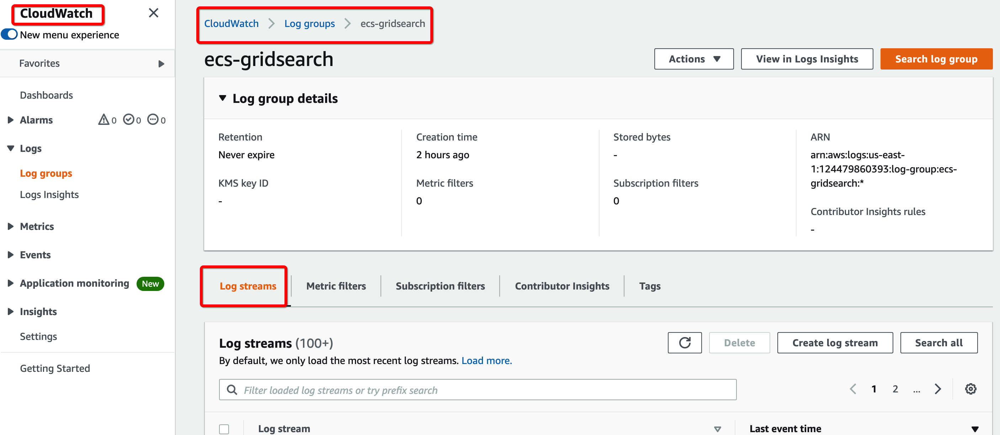
点击刚刚生成的任意 log stream 即可查看根据策略生成的交易日志：
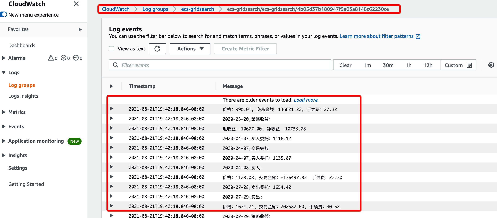
在最后的部分，我们可以排序和热图等方式找到最优的参数组合：
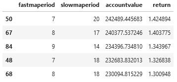
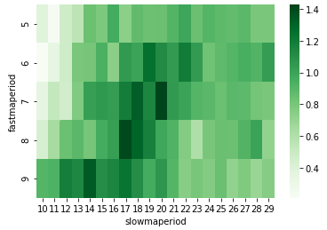